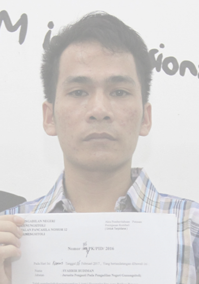

Kuswanto korban penyiksaan oleh aparat negara menunjukkan luka bakar di lehernya akibat kekerasan penyidik Polres Kudus ditemani keluarga korban dan pengurus KontraS saat memberikan keterangan pers di Kantor KontraS, Jakarta, 6 Desember 2014. TEMPO/Frannoto Cerita soal interogasi yang penuh kekerasan dalam proses penegakan hukum sudah lama terdengar, namun faktanya sulit diverifikasi. Bekerjasama dengan Komisi untuk Orang Hilang dan Korban Tindak Kekerasan (KontraS) yang sudah bertahun-tahun mengadvokasi para korban, kami ingin menguak kisah-kisah pilu dari mereka yang selama ini tak pernah bersuara.
Bersama adik iparnya, Yeni mendatangi tujuh kantor polisi yang ada di sekitar Tangerang dan Kabupaten Tangerang untuk mencari keberadaan Yusli. “Adik kandung saya itu dibawa polisi dan tak ada kabar,” kata Yeni mengenang peristiwa pada medio Desember 2011 itu di kantor kantor Komisi untuk Orang Hilang dan Korban Tindak Kekerasan (KontraS) pada Kamis, 22 Agustus 2019.
Cerita ini berawal ketika beberapa orang yang mengaku sebagai anggota polisi membawa Yusli pada Senin, 26 Desember 2011 dini hari. Yeni menuturkan malam itu sama sekali tak ada penjelasan anggota dari satuan kepolisian mana dan apa tujuan menangkap sang adik. Menurut dia, para orang itu langsung membawa dan memasukkan sang adik ke mobil.
Pagi harinya, ditemani Maria, istri yang baru sebulan dinikahi Yusli, Yeni mencari keberadaan sang adik di tujuh kantor polisi yang dekat dengan kawasan Rumpin. Mulai Kepolisian Sektor Ciputat, Cisauk, Parung Panjang, sampai Pamulang. Hasilnya, nihil.
Di tengah rasa frustasi yang membayangi keluarga, seorang petugas desa mendatangi rumah Yeni pada sore harinya. Ia memberitahu bahwa Yusli ada di Rumah Sakit Rumah Sakit Bhayangkara Tingkat I R Said Sukanto, Kramat Jati, Jakarta Timur. Si petugas memang tak mengucapkan apa-apa selain informasi tersebut. Namun, perasaan keluarga cemas. Seketika itu juga mereka berangkat ke rumah sakit.
Sampai di sana, keluarga langsung disambut kabar duka. “Yusli meninggal dalam kondisi tak wajar, banyak luka lebam dan ada bekas tembakan di dada kiri” kata Yeni. “Adik saya memang pernah berbuat kejahatan, tapi kenapa harus disiksa sampai meninggal?”
Yenny menceritakan kisahnya kepada Tempo dalam mencari keadilan untuk adiknya yang disiksa dan dibunuh oleh anggota polisi.
Yeni menuturkan Yusli memang pernah terjerat kasus pencurian sepeda motor. Ia ditangkap anggota Kepolisian Sektor Palmerah pada awal 2011. Setelah vonis sepuluh bulan penjara dan pengurangan masa tahanan, Yusli bebas pada Oktober. Bulan berikutnya ia menikahi Maria.
Rupanya, polisi kembali menangkap Yusli karena dicurigai masih terhubung dengan sindikat pencurian kendaraan bermotor. Tetapi, kali ini Yusli dicokok oleh Kepolisian Sektor Cisauk. “Saya sempat mendatangi Cisauk tetapi petugas jaga mengatakan tak ada penangkapan,” kata Yeni.
Menurut Yeni, keluarga pun akhirnya sepakat akan membawa perkara ini ke jalur hukum. Ia mafhum sang adik memang pernah terjerat perkara kriminal. Namun, kata dia, penyiksaan apalagi hingga Yusli meninggal adalah kejahatan hak asasi manusia.
“Adik saya memang pernah salah tapi bukan hak polisi mencabut nyawa dia,” kata Yeni. “Keluarga pun sepakat membawa perkara ini ke ranah hukum.” Keluarga pun melaporkan tiga orang anggota Polsek Cisauk ke Kepolisian Resor Kabupaten Tangerang. Mereka dilaporkan dengan tuduhan menculik dan membunuh Yusli. Yeni pun meminta bantuan Lembaga Bantuan Hukum (LBH) dan KontraS untuk mendampingi dia.
“Yusli meninggal dalam kondisi tak wajar, banyak luka lebam dan ada bekas tembakan di dada kiri”
Yeni mengatakan bukan perkara gampang menyeret anggota polisi ke pengadilan. Tawaran damai bolak-balik datang baik dari aparat desa maupun kepolisian. Pernah, kata Yeni, ada seorang aparat desa yang datang membawa uang Rp 2 juta agar keluarga tak meneruskan laporan. Yeni menolak dan si aparat desa malah mengancam akan mempersulit urusan kependudukan keluarganya.
Satu tahun memperjuangkan keadilan, akhirnya perkara ini naik ke meja hijau. Dalam persidangan terungkap, polisi menyiksa Yusli di kawasan Pusat Penelitian Ilmu Pengetahuan (Puspitek) di Serpong, Tangerang Selatan. Motifnya, untuk mencari barang bukti kasus pencurian kendaraan bermotor. Pengadilan Negeri Tangerang pun menjatuhkan vonis kepada tiga orang polisi itu. Satu orang dihukum 5 tahun penjara dan dua lainnya 2 tahun penjara.
Di permukaan kasus Yusli memang selesai setelah vonis dijatuhkan, namun Yeni mengaku tetap merasa gamang. “Saya tidak tahu apakah kematian adik saya sepadan dengan vonis itu,” kata dia. “Sebab luka yang ditinggalkan polisi sudah terlalu dalam.”
Makanya, Yeni pun memutuskan bergabung dengan keluarga korban yang pernah mengalami penyiksaan oleh polisi. “Kami berbagi beban,” kata dia.
Data Penyiksaan KontraS dalam sekilas
Berbeda lagi dengan cerita Yusman Telaumbauna. Pemuda asal Nias, Sumatera Utara ini nyaris menghadapi regu tembak. Pengadilan Negeri Gunungsitoli menjatuhkan hukuman mati kepada Yusman karena dianggap terlibat pembunuhan berencana atas bosnya. “Padahal saya disiksa oleh polisi untuk mengaku,” kata Yusman menceritakan ulang kejadian yang menimpanya pada 2012.
Tidak hanya disiksa agar mengakui telah membunuh bosnya sendiri, polisi juga menyakiti Yusman agar mengamini bahwa usia lelaki ini 19 tahun. Padahal, Yusman berkali-kali mengatakan kepada polisi bahwa dia masih berumur 16 tahun. Di tengah pukulan dan tendangan polisi, Yusman menyerah. Ia terpaksa mengakui telah membunuh bosnya sekaligus mengiyakan berusia 19 tahun.
Gara-gara pengakuan ini nyawa Yusman terancam. Pengadilan Negeri Gunungsitoli mengirimkan Yusman ke hadapan regu tembak. Beruntung, awal tahun 2017, Komisi untuk Orang Hilang dan Korban Tindak Kekerasan (KontraS) berhasil membuktikan Yusman masih di bawah umur ketika ditangkap polisi. Ia pun bebas dari hukuman mati.
Cerita Yeni hanya pucuk gunung es dari insiden penyiksaan oleh polisi terhadap tahanan. Tempo.co, bekerja sama dengan KontraS, menghimpun data dugaan kekerasan oleh polisi terhadap orang-orang yang ditangkap sejak 2011 sampai 2019. Hasilnya, total ada 445 kasus dugaan penyiksaan tahanan oleh polisi dengan 693 korban.
YANG TERSIKSA
Ratusan orang menjadi korban dugaan kekerasan atau penyiksaan oleh polisi sejak penangkapan sampai penahanan. Beberapa keluarga berani membawa kasus ini ke ranah hukum.
TAWARAN damai kepada keluarga M. Irfandi itu datang dari empat orang anggota Satuan Narkoba Kepolisian Sektor Medan Area pada akhir Maret 2019. “Mereka meminta keluarga Irfandi membayar Rp 100 juta agar dia bebas,” kata pengacara Irfandi dari Lembaga Bantuan Hukum (LBH) Medan Maswan Tambak pada Kamis, 5 September 2019.
Cerita pemerasan ini berawal ketika empat orang anggota polisi ini yaitu Bripka Jenli Damanik, Aiptu Jefri Panjaitan, Brigadir Akhiruddin Parinduri, dan Aiptu Arifin Lumbangaol menangkap Irfandi atas dugaan kepemilikan narkoba pada 26 Maret 2019. Alih-alih membawa Irfandi ke kantor polisi. Mereka memboyong pelaku ke sebuah warung.
Di sana, keempat anggota polisi ini menjanjikan bisa melepaskan Irfandi asal membayar Rp 100 juta. Irfandi kemudian menghubungi ayahnya Muhammad Rusli, 56 tahun. Namun Rusli tak menyanggupi angka tersebut. Setelah negosiasi akhirnya mereka sepakat membayar Rp 20 juta.
Selasa, 26 Maret 2019 sekira pukul 21.00 WIB, di Jalan Mandala tepatnya di depan Rumah Sakit Muhammadiyah dua orang dengan mengendarai sepeda motor hitam menemui Rusli untuk mengambil uang. Saat uang diserahkan, pihak Polrestabes Medan langsung menangkap kedua orang tersebut. Namun hanya satu orang yang tertangkap yaitu Dedi Pane, sedangkan satu orang lagi melarikan diri sambil membawa uang.
Rusli lalu membuat laporan polisi sesuai Tanda Bukti Lapor Nomor: STTLP/689/III/2019/RESTABES MEDAN Tertanggal 27 Maret 2019. Ketika menjalani pemeriksaan, Dedi Pane dihadirkan dan mengaku dirinya disuruh menjemput uang oleh Aiptu Jefri Panjaitan, Aiptu Arifin Lumbangaol, Brigadir Akhiruddin Parinduri, dan Bripka Jenli Damanik.
Selama proses penangkapan sampai ditahan, menurut Rusli, anaknya mengalami kekerasan fisik dengan dipukuli dan ditendang, juga menerima tekanan verbal oleh pihak yang mengaku sebagai anggota kepolisian Sektor Medan Area.
"Kami laporkan kasus pemerasannya dulu ke Paminal, kalau sudah putus baru ke etik di internal Propam. Tapi aku juga belum tau info terakhir sidang mereka, masih nyiapin sidang di PN dulu," kata Maswan.
Kepala Satuan Reserse Kriminal Polrestabes Medan Ajun Komisaris Besar Putu Yudha membenarkan laporan tersebut. Menurut dia, ke empat polisi tersebut telah menjadi tersangka kasus dugaan pemerasan di Pengamanan Internal (Paminal) Polresta Medan.
Sementara saat bersaksi di PN Medan pada Selasa, 17 September 2019, Aiptu Jefri Panjaitan selaku kepala tim penangkapan terdakwa mengaku, terdakwa sudah diintai selama dua bulan karena diduga mengkonsumsi narkotika sejak 2017 dan sering mendatangi Kampung Narkoba Sukaramai, Kecamatan Medan Area, Kota Medan bersama Putri Intan Sari Siregar yang saat ini menjadi buronan polisi.
Saat penangkapan, saksi bersama dua saksi lain menemukan alat hisap dan klip kecil berisi sabu seberat 0,20 gram (bruto) seharga Rp 100 ribu di kantong kiri terdakwa. Terdakwa langsung diborgol sedangkan Putri tidak diborgol, kemudian dimasukkan ke dalam mobil lalu dibawa berkeliling sampai berhenti di Pos Kamling di Jalan Gandhi, Kecamatan Medan Area. Saksi mengaku tidak mengenal Dedi Pane, tidak mengetahui hasil tes urine terdakwa, tidak ada menelpon orangtua terdakwa.
Saksi Aiptu Arifin Lumbangaol, Brigadir Akhiruddin Parinduri, dan Bripka Jenli Damanik kompak mengaku tidak mengenal Dedi Pane, hanya mengawasi proses penangkapan, dan tidak ada menghubungi keluarga terdakwa.
"Atas keterangan para saksi itu, kami meminta majelis hakim agar menetapkan beberapa keterangan mereka sebagai keterangan palsu. Alasannya, para saksi adalah terdakwa kasus tindak pidana pemerasan terhadap orangtua terdakwa," ungkap Maswan.
Keterangan para saksi polisi itu juga dibantah terdakwa. Kata Irfandi, dirinya tidak dibawa ke Pos Kamling di Jalan Gandhi melainkan dibawa ke sebuah warung makan di Jalan Gandhi. Para saksi menelpon orangtuanya. Setelah itu membawa dan menyekapnya di sebuah rumah kosong di daerah Sukaramai sekira pukul 05.30 WIB. Di rumah itu, dirinya dipukuli oleh para saksi.
"Terdakwa sudah melakukan tes urine dan hasilnya negatif. DPO Putri bukan melarikan diri melainkan dipulangkan oleh para saksi," sambungnya.
Untuk kasus narkoba yang menjerat Irfandi, Selasa, 1 April 2019, dia dituntut Jaksa Penuntut Umum Emmy Khairani Siregar dengan Pasal 112 ayat (1) Jo Pasal 132 ayat (1) Undang-Undang Nomor 35 tahun 2009 tentang Narkotika. Hukumannya, lima tahun penjara, denda Rp 800 ribu. Apabila terdakwa tidak mampu membayar denda itu, diganti hukuman penjara selama enam bulan.
Maswan membantah jika kliennya menyimpan narkoba. Dia menduga, ada upaya kriminalisasi terhadap Irfandi.
"Kita harus mengawal persidangan, membuka kasus ini biar terang benderang supaya datang keadilan untuk masyarakat, khususnya yang miskin," kata Maswan.
Dia menuturkan, pola pemerasan dan penyiksaan masih lazim ditemukan di kepolisian. Makanya, LBH Medan membuka posko pengaduan pelanggaran kepolisian pada 2018. Sejauh ini, LBH sudah menerima 30 kasus pengaduan dugaan pelanggaran oleh polisi.
Menurut Maswan, dari laporan ini, LBH melihat polisi belum profesional, objektif, proporsional, transparan, dan akuntabel untuk menjamin kepastian hukum dan rasa keadilan. Apalagi, kata dia, banyak korban yang mengadu adalah keluarga miskin atau tak mampu. "Inilah yang menjadi alasan mengapa posko pengaduan dibuka, kami menganggap penting memberikan akses bagi si miskin dan mereka yang termarjinalkan dalam mempertahankan hak-haknya," kata Maswan.
Jerit Petani dari Jambi
×
HANYA berbekal baju yang dipakai dan uang hasil patungan, Sumiati, bukan nama sebenarnya, dan lima orang kerabatnya dari Serikat Mandiri Batanghari, Jambi, nekat terbang ke Jakarta pada akhir Agustus 2019. “Kami ingin mencari pertolongan karena polisi menangkapi suami-suami kami,” kata dia kepada Tempo pada Jumat, 28 Agustus 2019 di kantor Komisi untuk Orang Hilang dan Korban Tindak Kekerasan (KontraS).
Sumiati mengatakan Kepolisian Daerah Jambi menangkapi lima puluhan warga yang tergabung dalam Serikat Mandiri Batanghari pada medio Juli 2019. Ibu dua anak ini bersama para perempuan lainnya pun sempat diangkut dari tempat tinggal mereka ke Kepolisian Daerah Jambi. Bahkan, salah satu perempuan sedang mengandung.
Menurut Sumiati, selama di tahanan, polisi tak mengizinkan para perempuan bertemu dengan suami mereka. “Kami ditahan sekitar sepekan,” kata dia. Masalahnya, begitu polisi melepaskan para perempuan, mereka tak bisa mungkin pulang ke rumah. Sebab, tempat tinggal mereka sudah dibakar. Selain itu, jarak dari Kepolisian Daerah Jambi ke Kecamatan Mersam, Kabupaten Batanghari juga sangat jauh.
Akhirnya, mereka patungan dan memberangkatkan beberapa perwakilan ke Jakarta untuk mencari pertolongan dan pendampingan hukum. Saat ini, Yayasan Lembaga Bantuan Hukum Indonesia mengadvokasi perkara ini.
Wakil Ketua Bidang Advokasi YLBHI, Era Purnama Sari mengatakan mereka juga telah melaporkan kejadian ini ke Komisi Nasional Hak Asasi Manusia (Komnas HAM) dan Komisi Nasional Antikekerasan terhadap Perempuan. Menurut Era, berdasarkan temuan awal banyak pelanggaran yang diduga dilakukan oleh polisi.
Era menuturkan Polisi menangkapi para warga SMB dengan alasan para petani mencuri, menganiaya, dan menyerang penduduk serta aparat keamanan. "Padahal mereka tidak melakukannya," kata Era.
Menurut penuturan Era, Ketua SMB, Muslim alias Sugianto, dan anggota kelompok tani itu sempat dituduh membakar lahan yang diklaim dimiliki PT WKS. Mereka lantas mendatangi kantor PT WKS untuk menjelaskan bahwa mereka tidak melakukan pembakaran lahan, 13 Juli lalu. Namun, saat sampai di kantor PT WKS, mereka justru dipukuli polisi yang berjaga di kantor tersebut. Bahkan salah satu anggota Brimob sempat menembakkan senapan.
Hari itu juga Muslim dan anggota SMB lainnya dilepaskan. Namun pemukulan terhadap anggota SMB itu membuat warga desa marah dan ikut mendatangi kantor PT WKS. Akibatnya warga bentrok dengan aparat keamanan.
Selanjutnya, pada 18 Juli lalu, polisi mengepung permukiman warga. Sekitar 41 orang ditangkap dan dianiaya. Satu hari kemudian, sekitar 200 personel gabungan polisi serta TNI datang dan menangkap ratusan warga. Para petani laki-laki dikumpulkan di satu lokasi di Distrik VIII untuk diinterogasi.
Dalam proses interogasi itu juga terjadi beragam penyiksaan, seperti pemukulan dengan popor senapan hingga penusukan dengan pisau. Sedangkan perempuan dan anak-anak disuruh melihat penyiksaan tersebut. "Kami dikumpulkan dan anak-anak disuruh melihat bagaimana polisi menyiksa suami saya," kata seorang perempuan petani SMB kepada Tempo, pekan lalu.
Selain menangkap dan menyiksa, sejumlah aparat kepolisian diduga membakar rumah warga. Ratusan rumah warga di Distrik I dibakar, kemudian diratakan menggunakan ekskavator PT WKS. Musala dan kantor SMB juga turut dibakar. "Sekarang lahan itu sudah ditanami pohon akasia oleh perusahaan," ujar WI, salah satu warga.
Komisioner Komnas HAM, Beka Ulung Hapsara, menyatakan lembaganya bersama Komnas Perempuan sedang melakukan investigasi mengenai adanya dugaan pelanggaran hak asasi manusia yang dilakukan aparat Polda Jambi. Berdasarkan temuan sementara, ada dugaan kekerasan terhadap perempuan dalam proses penangkapan warga. Salah satu korbannya adalah D, istri Muslim.
"Saat kami mengunjungi dan melihat kondisi D, dia tampak masih trauma, ketakutan, dan khawatir terhadap nasib anaknya," tutur dia.
Adapun dugaan penganiayaan terhadap para petani yang saat ini menjadi tahanan kepolisian masih dalam proses penyelidikan. "Kami meminta Kepala Polda Jambi membuka akses supaya kami mengetahui kondisi tahanan untuk membuktikan apakah ada penganiayaan dan sebagainya," kata dia.
Juru bicara Polda Jambi, Komisaris Besar Kuswahyudi, membantah adanya penyiksaan terhadap para petani yang dilakukan personel Polda Jambi. "Tidak ada itu, tidak ada," ujarnya. Kuswahyudi juga membantah tudingan pembakaran perkampungan warga oleh aparat kepolisian. "Sampai sekarang aktivitas warga tetap jalan normal."
Adapun juru bicara PT WKS, Tafiqurrahman, menuding warga berupaya merebut lahan perusahaan untuk dijadikan kawasan transmigrasi swakarsa mandiri. "Tentu saja kami menolak usul mereka karena dalam kawasan HTI ada tanaman akasia yang sudah siap panen," ucap dia.
Tentang Pengguna Narkoba yang Disiksa Hingga Tewas
×
TERIAKAN minta ampun yang keluar dari mulut Agung Pranata tak menghentikan beberapa polisi untuk terus menghajar pemuda asal Makassar itu pada Kamis, 29 September 2016. "Sepanjang perjalanan ke kantor polisi Agung terus dipukuli,” kata Andri, teman Agung, menceritakan ulang peristiwa itu pada Sabtu, 7 September 2019.
Andri bercerita, dinihari itu, polisi merangsek masuk ke rumah Agung yang ada di Kelurahan Gunung Sari, Kecamatan Rappocini. Tanpa babibu, polisi menarik Andri dan Agung serta dua orang lainnya ke mobil polisi. Polisi menangkap keempat orang ini dalam kasus penyalahgunaan narkoba.
Andri mengatakan Agung memang menggunakan narkoba. Bahkan pengadilan sudah memvonis Andri satu tahun penjara.
Dalam kondisi mata dan tangan dilakban, Andri mendengar polisi terus memukuli Agung. Bahkan, sang kawan sudah berteriak meminta ampun. Sampai di lokasi, polisi pun terus menyiksa Agung dan kawan-kawannya.
Kamis siang, polisi membawa Agung ke Rumah Sakit Bhayangkara karena ia tak sadarkan diri. Namun, dokter rumah sakit menyatakan Agung meninggal pada Jumat, 30 September 2019 dini hari.
Berita duka ini pun sampai ke telinga keluara Agung. “Saya tak masalah jika polisi menangkap anak saya karena terbukti menggunakan narkoba tetapi kenapa harus disiksa,” kata Ibu Agung, Mawar Ikrawardana pada Jumat, 6 September 2019.
Mawar mengatakan polisi sempat berdalih anaknya overdosis penggunaan narkoba. Argumen ini, kata Mawar, sumir. Sebab, berdasarkan hasil autopsi, Agung meninggal karena patah tulang leher.
Keluarga pun membawa perkara ini ke jalur pidana. “Bahkan pernah ada polisi yang mencoba memberikan kami uang Rp 5 juta agar damai,” kata Mawar. “Tetapi kami tak mau.
Kepala Bidang Profesi dan Pengamanan (Propam) Kepolisian Daerah Sulawesi Selatan, Komisaris Besar Hotman Sirait membenarkan adanya perkara ini. Menurut dia, polisi sudah menetapkan lima orang anggota polisi sebagai tersangka.
Sementara, Direktur Direktorat Kriminal Umum Polda Sulsel, Komisaris Besar, Andi Indra Jaya mengaku penyidik telah mengirim berkas perkaranya ke kejaksaan tinggi. “Tapi masih diteliti oleh jaksa penuntut umum (JPU),” kata Andi Indra dengan singkat tanpa menyebutkan secara detail.
Lebih lanjut saat ditanya soal perkara kasusnya, dia enggan berkomentar lantaran kasus tersebut telah lama. Yang jelas penetapan lima tersangka dari anggota polisi karena diduga lalai dan menganiaya korban hingga tewas.
Anggota Lembaga Bantuan Hukum (LBH) Makassar, Haerul Karim mengaku banyak keluarga korban kekerasan yang takut melapor. Alasannya saat di sel, para korban disiksa lebih sadis dan hukumannya juga bisa lebih berat lagi.
“Hanya kasus kematian Agung yang keluarganya berani melapor ke LBH,” kata dia. Meski begitu, Haerul tak memungkiri jika kekerasan yang dilakukan oleh polisi masih kerap terjadi saat mencari alat bukti.
Apalagi jika itu terkait kasus narkotika. “Paling banyak memang kasus narkoba, cuman keluarga takut melapor. Jadi kita tak bisa dampingi kasus kekerasannya,” ujar Haerul.
Dia mencontohkan kasus Agung yang banyak penyimpangan dilakukan polisi mulai penangkapan sampai pemeriksaan. Misalnya, saat penangkapan tak ada surat izinnya. Polisi juga mengaku jika korban meninggal akibat overdosis.
Padahal tidak ada pemeriksaan dari dokter. "Lebih parahnya lagi, luka diseluruh tubuh korban dikatakan karena membenturkan dirinya sendiri ke tembok," lanjut dia. Oleh karena itu, kata Haerul, setiap kasus yang melibatkan polisi maka terkesan tak ingin diproses. Apalagi mereka berdalih saat itu personel melakukan tugasnya. "Malah yang aktif bertanya dan mendorong kasus itu adalah keluarga korban, polisi terkesan melindungi."
Kamar Gelap Narapidana Teroris
×
Mahmudi Haryono alias Yusuf Adirima, 42 tahun, eks narapidana teroris tak bisa menyembunyikan kekecewaannya terhadap polisi. Ingatannya kembali ke tahun 2003. Lelaki bertubuh kurus ini sulit menghapus trauma karena penyiksaan yang ia alami sepanjang menjalani hukuman karena tindak pidana terorisme.
Yusuf dipenjara selama hampir 6 tahun karena terbukti menyimpan bahan peledak, ribuan amunisi, dan dokumen terorisme. Ia ditangkap bersama tiga rekannya di rumah kontrakan Jalan Taman Sri Rejeki Selatan VII/2, Kalibanteng, Semarang pada Juli 2003.
Petugas mengepung rumah kontrakan itu sekitar pukul 22.00. Polisi menghajar Yusuf dengan cara memukul perut dan wajah, menendang, mendorong tubuhnya ke tembok kontrakan. “Mata saya berkunang-kunang, hilang kesadaran. Saya sempat pingsan waktu itu,” kata Yusuf di Yogyakarta, Sabtu, 14 September 2019.
Dari rumah kontrakan itu, Yusuf bersama tiga kawannya digelandang ke hotel yang berjarak tiga kilometer dari kontrakan itu. Hotel ini menjadi tempat penyiksaan paling berat. Tujuan penyiksaan itu menurut Yusuf agar ia memberikan informasi sebanyak-banyaknya tentang jaringan teroris.
Untuk melumpuhkan Yusuf, polisi menyetrum sekujur tubuh Yusuf yang hanya berbalut celana dalam selama tiga hari. Dia ingat setrum itu berbentuk tongkat berukuran 40 sentimeter yang dialiri listrik kejut “Saya mati rasa,” kata Yusuf.
Dalam satu hari, polisi menyetrum tubuh Yusuf sebanyak lima hingga tujuh kali. Interogasi berjalan secara simultan dan bertubi-tubi. Polisi mencecar Yusuf dengan banyak pertanyaan.
Terapi kejut listrik ini, kata Yusuf ampuh untuk mengorek segala informasi. Polisi langsung bertanya dengan menyudutkan Yusuf.
Dalam posisi tangan terikat, Yusuf terus dihajar hingga subuh. Polisi menunjukkan wajah-wajah orang melalui komputer jinjing. Mereka mencambuk tubuh Yusuf menggunakan sabuk kulit yang ia kenakan. Yusuf ditelanjangi dan hanya mengenakan celana dalam.
Yusuf sempat tak sadarkan diri. Dalam kondisi diborgol. Polisi menyeretnya ke kamar mandi. Penyiksaan paling parah oleh polisi menurut dia dilakukan di hotel itu. “Saya juga diancam akan ditembak bila teman saya lolos dari kejaran polisi,” kata Yusuf.
Ada sepuluh orang polisi dalam satu rombongan yang menyiksa Yusuf. Polisi juga mengiming-imingi Yusuf duit senilai Rp 10 juta agar dia mengaku bahwa Yusuf pelaku terorisme.
Trauma membekas. Dia pernah sangat membenci polisi atas perlakuan mereka. Yusuf baru bisa sedikit menguranginya pada tahun kelima atau keenam setelah ia dibebaskan pada 2009.
Untuk menghilangkan dendam kepada polisi, Yusuf berpegangan pada ajaran Islam. Dalam Islam menurut Yusuf ada seruan bahwa Allah menolong seorang hamba selama hambanya itu mau menolong saudaranya. Dalam Islam mengenal saudara seagama. “Aparat juga punya nilai-nilai yang baik. Itu yang membuat saya tidak dendam,” kata Yusuf.
“Makanya data yang kami miliki sekarang hanya permukaan gunung es,”
Staf Divisi Pembelaan Hak Asasi Manusia KontraS, Falis Agratiatma, mengatakan angka tersebut bisa saja bertambah. “Sebab ada keluarga korban yang tidak mau melapor atau tak tahu bagaimana melapor,” kata Falis ketika ditemui di kantor KontraS pada Kamis, 22 Agustus 2019.
Bahkan, kata Falis, dalam beberapa kasus ada keluarga korban yang tak berani melapor karena diintimidasi atau dipaksa agar menandatangani surat damai. “Makanya data yang kami miliki sekarang hanya permukaan gunung es,” kata Falis.
Falis menuturkan penyiksaan terhadap tahanan oleh polisi masih menjadi metode favorit untuk mencari barang bukti. Dari kasus-kasus yang diadvokasi oleh KontraS, kata Falis, kebanyakan korban memang diduga terlibat tindak kriminal. Sehingga polisi menyiksa mereka untuk mendapatkan barang bukti. Selain itu, ada juga motif penyiksaan agar pelaku mau mengakui perbuatannya.
Penyiksaan, kata Falis, pun tak melulu dalam bentuk fisik. Teror psikologis juga sudah masuk kategori penyiksaan. Misalnya, menakut-nakuti tahanan dengan ular atau tak memberi makanan selama berhari-hari.
Falis mengatakan Indonesia sebenarnya sudah meratifikasi Konvensi Menentang Penyiksaan dan Perlakuan atau Penghukuman Lain yang Kejam Tidak Manusiawi dan Merendahkan Martabat Manusia pada 1998. Sayangnya, 21 tahun setelah kesepakatan internasional ini diratifikasi, Indonesia tak kunjung membuat undang-undang antipenyiksaan.
Sebenarnya, Pemerintah sempat berancang-ancang menyusun undang-undang antipenyiksaan pada 2012. Kala itu, Kementerian Luar Negeri serta Kementerian Hukum dan Hak Asasi Manusia sempat mengundang Institute for Criminal Justice Reform (ICJR) untuk membahas materi yang bakal masuk ke dalam aturan itu. Namun, pembahasan mentok di DPR.
Terminologi penyiksaan sebenarnya juga ada dalam Rancangan Kitab Undang-undang Hukum Pidana (KUHP). Beleid ini ada dalam Pasal 668 yang mengatur mengenai tindak pidana bagi aparatur negara yang menggunakan paksaan, baik paksaan untuk mendapatkan pengakuan maupun paksaan agar orang memberikan keterangan.

Nyawa di Ujung Regu Tembak
Seorang pemuda di Nias, Sumatera Utara, divonis hukuman mati karena dituduh membunuh bosnya. Diburu waktu yang sedikit, Komisi untuk Orang Hilang dan Tindak Kekerasan (KontraS) pun turun tangan. Mainkan game interaktif berikut untuk menyelamatkan nyawa pemuda tersebut.
Kemudian dalam Pasal 669 mengatur tindak pidana bagi setiap pejabat atau orang-orang lain yang melakukan perbuatan menimbulkan penderitaan atau rasa sakit yang berat, baik fisik maupun mental terhadap seseorang dengan tujuan untuk memperoleh informasi atau pengakuan dari orang tersebut atau pihak ketiga.
Sayangnya, KontraS masih melihat banyak bolong dalam aturan tersebut. Misalnya, dua pasal itu tak mengatur mengenai orang-orang yang memberi perintah atau atasan si pelaku yang mengetahui penyiksaan sedang terjadi.
Falis mengatakan angka penyiksaan juga makin tinggi karena masih banyak masyarakat yang permisif terhadap perbuatan ini. “Ada masyarakat yang menggap pelaku kriminal layak disiksa,” kata Falis. “Ambil contoh misalkan ada pelaku pemerkosaan ditangkap, di media sosial pasti banyak yang komentar meminta agar pelaku disiksa.”
Falis mengatakan, selain soal hak asasi, sistem hukum harus mengedepankan asas praduga tak bersalah. “Semua orang sama di mata hukum, sehingga tak boleh ada penyiksaan,” kata dia.
Kepala Biro Penerangan Masyarakat Divisi Humas Markas Besar Polri Brigadir Jenderal Dedi Prasetyo tak membantah jika masih ada polisi yang menyiksa untuk mendapatkan pengakuan dari para tahanan. “Kami memang masih mendapat laporan ada anggota polisi yang menyiksa tahanan, padahal itu tak diperbolehkan,” kata Dedi.
Data kasus penyiksaan oleh Anggota Kepolisian Periode Juni 2018 - Mei 2019 dari Kepala Divisi Hubungan Masyarakat POLRI
Menurut Dedi, polisi sebenarnya sudah memiliki peraturan Kapolri yang melarang adanya penyiksaan terhadap tahanan. Bahkan, kata Dedi, larangan soal menyiksa tahanan atau pelaku sudah ditekankan kepada para polisi sejak menjalani pendidikan. Namun, Dedi mengakui masih ada anggota polisi yang tak menjalankan aturan tersebut. Dedi beralasan, “Ada ribuan anggota polri, dan tak mungkin kami mengawasi.”
Berdasarkan data dari Mabes Polri, ada 91 kasus dugaan penyiksaan oleh anggota polisi sepanjang Juni 2018-Mei 2019. Dari angka itu, 75 anggota polisi sudah dikenakan sanksi disiplin. Sementara itu, 15 orang anggota dikenai Kode Etik Profesi Polisi (KEPP) seperti pindah tugas yang bersifat demosi.
Dedi mengatakan Mabes Polri akan terus memperbaiki sistem penanganan perkara untuk menekan bahkan menghilangkan penyiksaan. Ia pun mempersilakan masyarakat agar melapor ke Divisi Propam setiap menemukan penyiksaan oleh anggota. “Kami pasti menghukum mereka yang terbukti menyiksa tahanan,” kata dia.